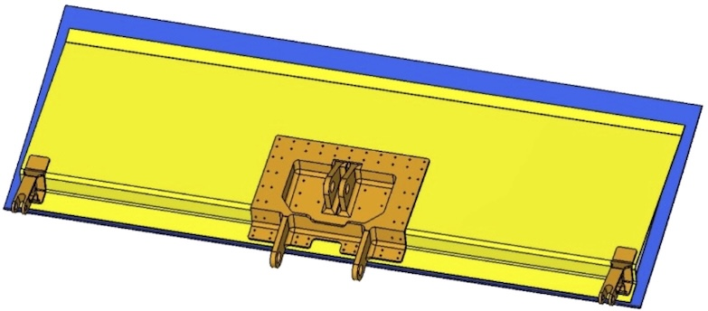

FACC AG
COMAC C919 Spoiler assembly failure rate prediction - composite materials
The COMAC C919 aircraft spoiler assembly, designed and manufactured by Fischer Advanced Composite Components (FACC AG), is a critical aerodynamic component developed to ensure aircraft safety and operational reliability. Spoilers play an essential role by reducing wing lift during various flight phases, including landing and rapid descent, making their reliable performance paramount to passenger safety.
This project involved a comprehensive reliability prediction analysis to validate that the spoiler assembly would meet stringent performance and longevity requirements set by the Commercial Aircraft Corporation of China (COMAC). Specifically, the assembly was required to achieve a mean time between failures (MTBF) of 200,000 flight hours, while individual structural components targeted an impressive 1,000,000 flight hours.

To achieve this, the reliability analysis employed both deterministic and probabilistic methodologies. Standardised approaches from established reliability guidelines such as NSWC-10 ('Handbook of Reliability Prediction Procedures for Mechanical Equipment') and NPRD ('Non-electronic Parts Reliability Data') were utilised for conventional components. Composite materials underwent a rigorous probabilistic analysis informed by MIL-HDBK-17 ('Composite Materials Handbook'), accounting for variations in manufacturing processes and material strength.
The analysis meticulously identified and assessed potential failure points within the spoiler assembly, quantifying risks through Weibull distribution modeling. Particular attention was given to composite material reliability, recognising that material consistency during production significantly impacts operational lifespan. This nuanced understanding allowed for more accurate risk assessment and better-informed component selection.
 By integrating detailed material analysis and predictive modelling, this project ensured the COMAC C919 spoiler assembly met and exceeded rigorous reliability and safety standards, thereby significantly enhancing overall aircraft operational integrity and passenger safety.
By integrating detailed material analysis and predictive modelling, this project ensured the COMAC C919 spoiler assembly met and exceeded rigorous reliability and safety standards, thereby significantly enhancing overall aircraft operational integrity and passenger safety.